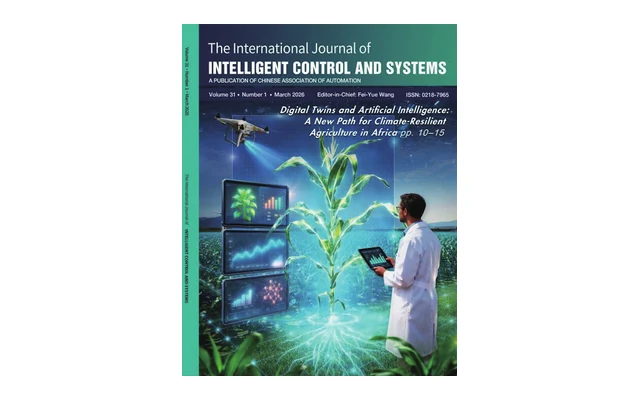

New AI and New Society
Agricultural Intelligence Takes Root: Turning Plant Science into a Digital Frontier
Mengzhen Kang, Xiujuan Wang, Marc Jaeger, Veronique Letort, Fei-Yue Wang
The International Journal of Intelligent Control and Systems, Volume 31, Number 2, pages 117–118, published 2026-06-25.

Abstract
No abstract is supplied in the current public IJICS record for this editorial. Use the PDF link above to read the full article.
Keywords
No author keywords are supplied in the current public IJICS record.